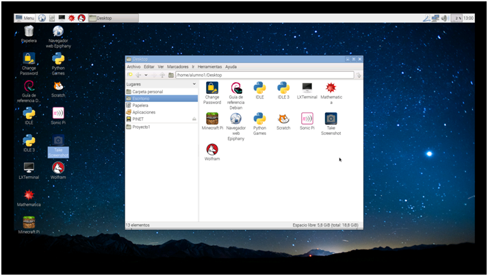

8. Software educativo incluído en la Raspberry Pi
Este módulo concluye el curso a modo de Epílogo, comentando alguna de las características, funciones y usos de los programas que podremos utilizar con nuestros alumnos en sus Raspberry´s, Realizar tareas con ellos es bastante sencillo y motivador para los alumnos. Esperamos que os gusten y os animéis a utilizarlas.

SCRACTCH :Es un lenguaje de programación visual, especialmente diseñado para que niños y jóvenes se inicien en tareas sencillas de programación. Gratuito, con multitud de proyectos accesibles en Youtube y en la propia página del desarrollador, en el que además de ejemplos, podremos acceder a áreas de consulta de datos. Por último cabe destacar que se puede utilizar también con recursos robóticos. Aquí os dejo un enlace en el que podréis saber más.
MINECRAFT PI: Es un videojuego que está teniendo mucho éxito entre los chicos y chicas menores de 20 años. Con dos modos del mismo, supervivencia y creativo, nos ofrece un mundo infinito en el que poder desarrollar nuestras capacidades creativas, la toma de decisiones y la imaginación.
Quizá este sea el artículo donde mejor se explica cómo podemos adaptar el juego a nuestro alumnado y sacar el máximo partido de él.
http://www.educaciontrespuntocero.com/noticias/que-es-minecraft-educacion/32274.html
IDLE Y PYTHON:Aquí ya estamos hablando de programas mucho menos enfocados a jóvenes. Python es el propio lenguaje de programación, mientras que IDLE es el intérprete que nos ayudará en nuestra tarea de programar.
https://fabricadigital.org/2016/01/hola-pi-empezando-a-programar-en-raspberry-pi-con-python/
SONIC PI:Sonic Pi es una herramienta diseñada y creada por Sam Aaron y el equipo de Sonic Pi. Durante el proceso se estuvo muy en contacto con el profesorado de música y ciencias de la computación, y el resultado esuna herramienta de educación que abarcaesos dos campos a la vez. Es decir, es una herramienta especialmente atractiva para aquellos niños(o no tan niños)interesados en la música y que quieran profundizar en ella, relacionándola con las matemáticas y la tecnología al mismo tiempo.
http://pitando.net/2015/07/24/sonic-pi/
MATHEMATICA:Mathematica es un paquete de desarrollo para aplicaciones de tipo general en las que los aspectos de desarrollo matemático, algebraico, numérico, simbólico y gráfico juegan un papel preponderante. Mathematica está diseñado para tratar tanto cálculos matemáticos, así como aquellos cálculos numéricos tradicionalmente llevados a cabo en FORTRAN. La mayoría de funciones especiales de la física matemática y funciones matriciales, ya están construidas en Mathematica. Además, tiene una extensa capacidad gráfica para la visualización de los resultados de los cálculos.
www.xtec.cat/~fgomez/apmath.html
RASPBIAN:
Es el Propio sistema operativo del equipo de nuestros alumnos y con el podemos sacar todo el partido a las “Pi´s” aquí os dejamos algunos proyectos realizados mediante Raspberry Pi que creemos que son interesantes os invitamos a leerlos y por supuesto a crear los vuestros propios.
http://es.gizmodo.com/10-proyectos-de-raspberry-pi-ideales-para-principiantes-1791255833
https://www.xataka.com/accesorios/las-13-mejores-ideas-que-hemos-encontrado-hechas-con-raspberry-pi
Como ya comentábamos al principio del curso, este tipo de sistema Open Source favorece el aprendizaje colaborativo y la compartición de proyectos, dudas, sugerencias, ideas, etc.
Aquí tenéis el enlace al foro de la comunidad hispana de Raspberry Pi.
http://www.raspberrypi-spanish.es/foro/index.php?sid=3be38e5dd11162830ecfe1ad680f1e73

Monta tu aula de informática con Raspberry Pi por Fernando Gasca Andreu bajo licencia Creative Commons Reconocimiento-NoComercial-CompartirIgual 4.0 Internacional License.